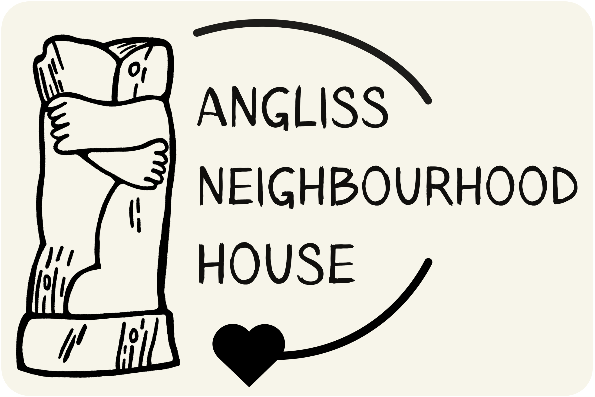

fish for chips
Fish for Chips is a game I made for the 2024 Black Cat Game Jam, which ran for one week with the theme “Chaos”. I collaborated with a musician to create the game's sound effects and music. Fish for Chips placed 36th overall out of more than 130 entries.
Fish for Chips follows a middle-aged cat who ventures into the sewers beneath a tavern to rescue his son, who has been kidnapped by a gang of rats. After prototyping a fun combat system, I spent most of the week developing the game's art, animations and story.
FILMS
Since childhood, I have enjoyed creating stories through short animations, YouTube videos and comics. When I began my Year 10 Media course, I was eager to apply that creativity to filmmaking and begin exploring storytelling through film.
In Year 10, my partner and I created an interview-style documentary exploring the dangers of addiction, with a focus on video games. I continued making films with friends throughout the following year and into VCE, where I collaborated with Oli Vaughan on a seven-minute fight sequence featuring detailed choreography. Our final film together was submitted for Oli's VCE assessment and followed two brothers coping with the loss of their mother.


The following slides are a collection of films I directed or helped produce.
PHOTOGRAPHY
In 2024, I learned the technical aspects of photography as part of my Year 10 Media course.
In 2026, I completed work experience at Angliss Neighbourhood House, where my primary responsibility was photographing events held throughout the year.


The following slides are a collection of photos I took in 2026.